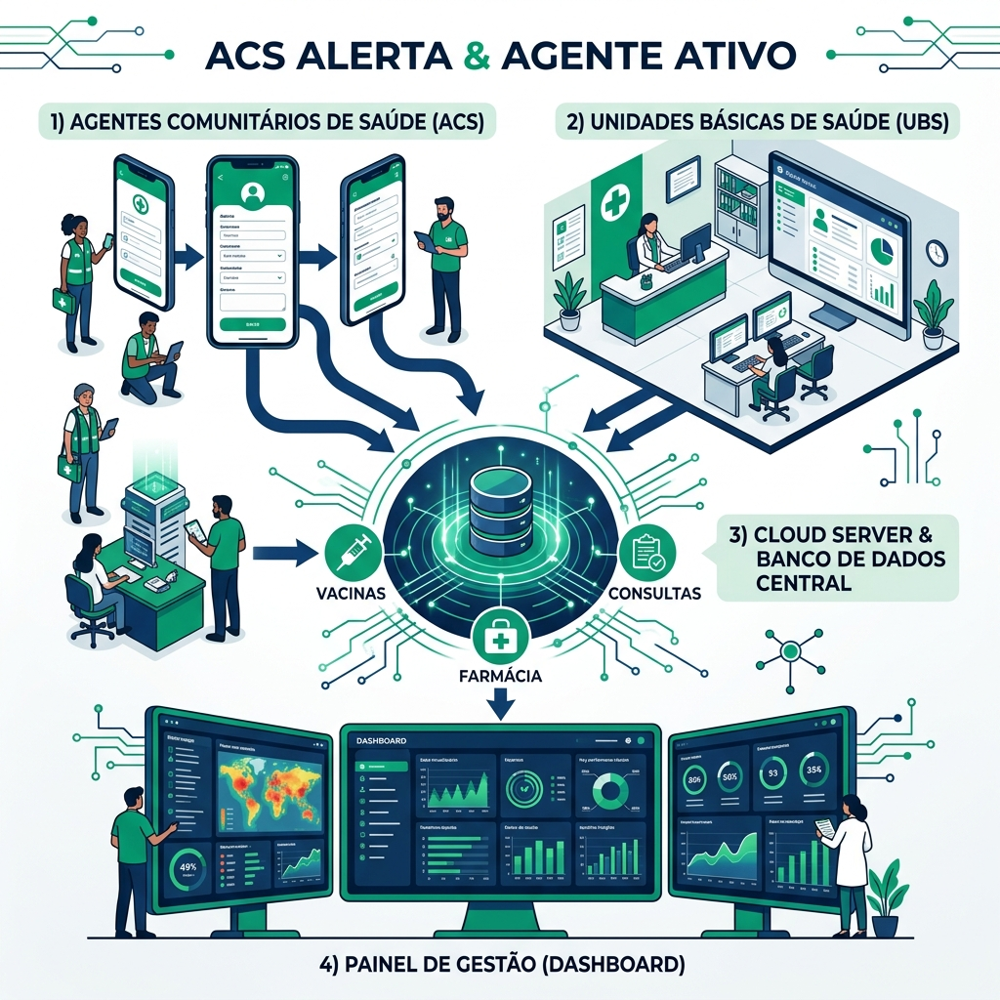

Pindoretama na vanguarda da Saúde Digital
A Agente Ativo conecta agentes de saúde, UBS e gestão em tempo real (através do painel integrado ACS Alerta), salvando vidas e otimizando recursos públicos.
Eficiência que Salva
Transformando o atendimento básico através da tecnologia ativa.
Coleta em Tempo Real
Dados inseridos pelo Agente Ativo são transmitidos instantaneamente para a unidade central.
Alertas Imediatos
Casos de risco disparam alertas para a UBS local, agilizando a intervenção médica necessária.
Gestão Inteligente
Painéis analíticos permitem decisões baseadas em dados concretos para toda a Secretaria de Saúde.
Ecossistema de Saúde Digital
Informatização completa: do Agente de Saúde à Unidade Básica (UBS).

1. Digitalização no Campo (ACS)
O trabalho de campo é a porta de entrada. Através do painel operacional ACS Alerta, o agente realiza visitas domiciliares, coletando dados epidemiológicos em tempo real. Essa informação alimenta o sistema instantaneamente.
2. Unidade Básica (UBS) Informatizada
A grande evolução é a informatização total da UBS. Consultas, triagem, farmácia e vacinação estão integradas em um prontuário eletrônico unificado, eliminando papéis e retrabalho.
3. Hub Central & Banco de Dados
Todas os dados da rede convergem para um Servidor Central Seguro. Isso garante que o gestor tenha uma visão única e fiel da saúde do município, permitindo decisões rápidas.
4. Inteligência e Dashboard
Com dados integrados, o gestor monitora mapas de calor de doenças, performance das equipes e cobertura vacinal em tempo real, garantindo total transparência e eficiência.
Impacto Financeiro na Saúde (APS)
Gestão: Prefeito Dedé Soldado | Competência: 2025 - 2026 | Base: Fundo Nacional de Saúde (FNS)
A dependência direta entre a organização das informações de saúde e a manutenção do fluxo de caixa municipal é crítica. Os repasses mensais para Pindoretama variam de R$ 250.000 a R$ 280.000 e estão diretamente condicionados aos dados processados e enviados ao Ministério da Saúde.
1. Resumo de Repasses (Custeio Mensal APS)
Capitação Ponderada
Recurso vinculado ao número de cidadãos com cadastro atualizado (CPF/Cartão SUS) realizado pelos ACS.
Risco: Perda imediata por cadastros desatualizados.
Pagamento Desempenho
Valor variável (média R$ 45k - R$ 65k) conforme alcance de metas (Pré-natal, Vacinação, Crônicos).
Risco: Queda de até 50% por falha nas metas.
Incentivos Fixos
Repasses para programas estratégicos governamentais, como Saúde na Escola e outros custeios de rotina.
2. Investimentos Específicos Garantidos (2025 - 2026)
| Ano / Programa | Valor Destinado | Finalidade Estratégica |
|---|---|---|
| 2025 (Emenda Parlamentar) | R$ 249.653,00 | Estruturação de Unidades de Atenção Especializada. |
| 2026 (Portaria 544) | R$ 5.802.600,00 | Estruturação de Unidades de Atenção Básica (Obras e Equipamentos). |
| 2026 (Saúde Bucal) | R$ 399.381,00 | Estruturação da rede municipal de Saúde Bucal. |
Conclusão Estratégica
Para garantir a manutenção e o crescimento destes valores, o monitoramento em tempo real do Indicador Sintético Final (ISF) através do eGestor AB é vital. Ferramentas como o Agente Ativo antecipam estes números antes do fechamento quadrimestral, evitando perdas irreversíveis e bloqueios de recursos.
Resultados Mensuráveis
-
✓Redução Crítica de Custos: Menos gastos com internações evitáveis através do monitoramento preventivo.
-
✓Gestão Farmacêutica: Controle rigoroso da medicação para evitar desperdícios e faltas.
-
✓Cidade Inteligente: Pindoretama consolidando o uso de BIG DATA na saúde pública.

Pronto para transformar a saúde municipal?
Entre em contato com nossa equipe técnica para uma apresentação detalhada.